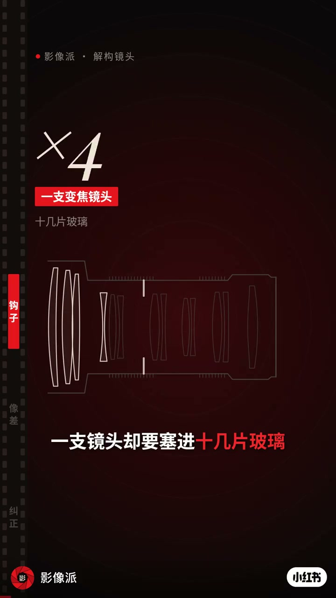
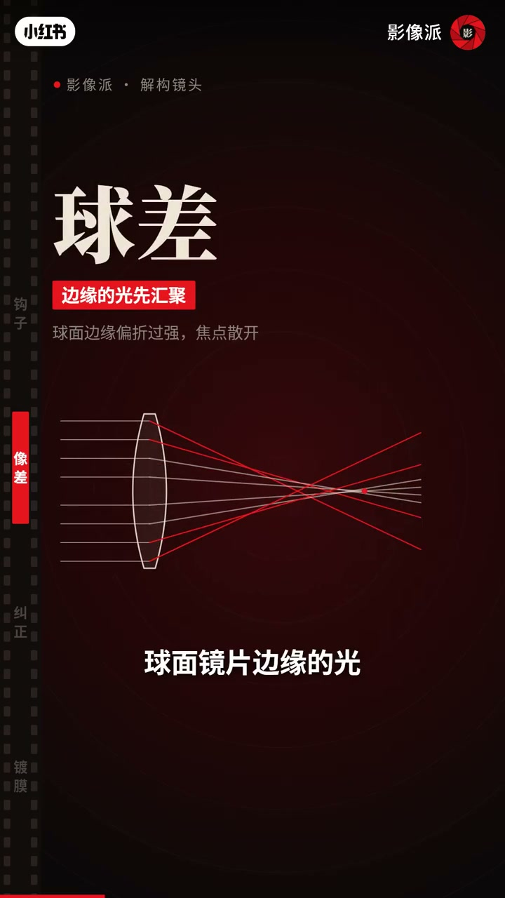
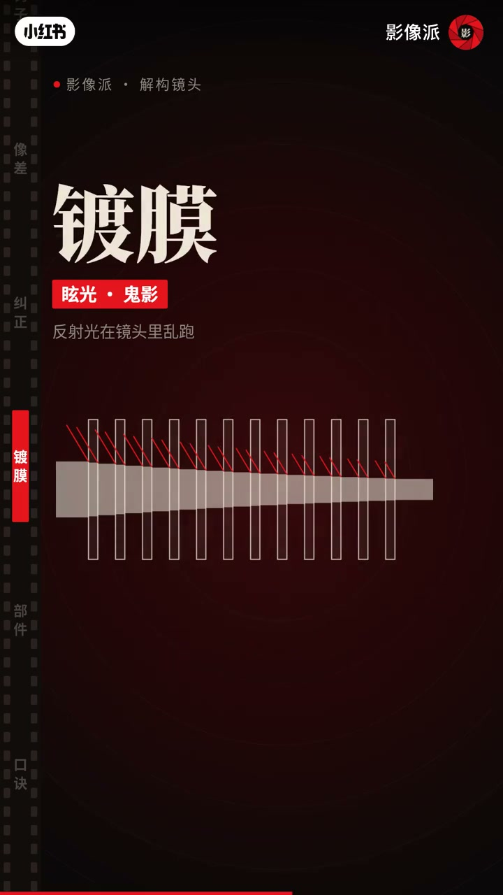

内容要点
「影像派·解构镜头」用截面动画解释：一片放大镜就能成像，但球差/色差让画面散焦；变焦镜头要塞十几片玻璃，是为了让镜片互相纠正毛病。玻璃一多又带来反射与眩光，靠多层镀膜把透光率拉回九成左右。中段部件与口诀页口播有缺口，要点以画面字幕为准。
知识结构
×5 变焦镜头示意：一支镜头要塞进十几片玻璃。
只用一片玻璃成像有毛病；球差＝边缘的光先汇聚，焦点散开。
多片玻璃互相抵消毛病；非球面一片顶多片；玻璃一多，每面约反射4%，二十多面透过光不到一半，乱反射变眩光鬼影。
多层镀膜把单面反射压到0.5%以下、透光约九成；紫绿色反光即镀膜；对焦镜组由马达前后推动；参数表对应消像差/压紫边/非球面/镀膜分工。
镜片数量不是堆料，而是消像差的互相纠正；镀膜则是「玻璃一多」之后的透光与眩光账单。
00:00-00:48从一片玻璃的毛病到多片纠正
开场截面图抛出反差：一片放大镜就能成像，为何变焦镜头要塞十几片？画面先立「毛病」——只用一片玻璃，成像有两个问题；球差页字幕写清：球面边缘偏折过强，边缘的光先汇聚，焦点散开。
纠正段字幕点题「多片玻璃互相抵消彼此的毛病」。口播补一句：一片非球面能顶好几片球面。紧接着新账单出现：光每过一个玻璃—空气界面约反射4%，二十多个面叠下来透过光不到一半，反射乱跑就成眩光和鬼影。


00:48-01:26镀膜、对焦镜组与参数口诀
解决办法是镀膜：多层镀膜把每个面的反射压到约0.5%以下，透光率回到九成左右；镜片上那层紫绿色反光就是它。部件页用红框标出对焦镜组——马达推着前后移动完成对焦。
收尾「看参数」口诀页把参数表翻译成分工：几片几组→消像差，ED→压紫边，非球面→一片顶多片，镀膜→保透光。整条视频是把规格表读成光学职责图。

完整转录（16段）
以下文本由 Whisper medium 模型自动转录，可能存在少量识别误差，已尽可能修正。
一片放大镜就能成像
一片非球面镜片能顶好几片球面镜片
可玻璃一多 新问题来了
光每穿过一个玻璃和空气的介面
就会被反射掉大约4%
20多个面叠下来
透过的光不到一半
反射的光还会乱跑
变成眩光和鬼影
解决办法是镀膜
多层镀 weather把每个面的反射
压到0.5%以下
透光率回到9成左右
镜片上那层紫绿色的反光就是它
镜片管成像
.